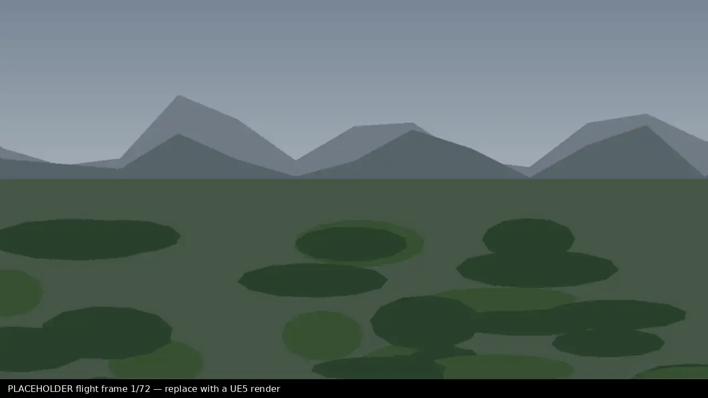

Nature, rendered.
Heavy rain. No people.
Seamless loop. First frame matches the last.
4K, rendered in Unreal Engine 5.
Find the shot. License it.

Heavy rain. No people.
Seamless loop. First frame matches the last.
4K, rendered in Unreal Engine 5.
Find the shot. License it.